UC San Diego
COGS 137 - Fall 2026
2026-10-05
Q: I’m a little curious how often we’ll be using integer variable types, and what we’ll be using them for. At the moment I don’t see a clear benefit.
A: For our purposes, we won’t. Numerics will work for our needs. The only times one would really want to ensure an integer are: 1) if a function input/code requires an integer or 2) when you want to be very explicit about counts or indices, which will always be integers.
Q: I am curious about what would happen with a vector that uses a boolean with a character string.
A: It would coerce to a string! c(FALSE, "shan")
Q: It seems like you can’t get any errors in R, is there a way to get an error.
A: Yes! Lots of errors - we’ll see some in class. But, one note is that they are red….but so are warnings and other output….so just b/c you see red doesn’t mean that there is an error. But, if you’re thinking about dividing by zero giving Inf, you’re right that that would produce an error in other programming languages. ((FALSE, "shan") would return an error…b/c it’s missing the c before the open parentheses if you want ot see one)
Due Dates:
Note: we’re discussing this before you know who your CS01 group mates are. This is because everything here is what everyone will need to know. Also, everyone will individually be exploring the data in lab on Thursday…and I want everyone to have the background and work individually to understand the data.
Source: Hartman and Huestis, 2013
Evidence suggests recent smoking and/or blood THC concentrations 2–5 ng/mL are associated with substantial driving impairment, particularly in occasional smokers. (Hartman & Huestis, Clinical Chemistry, 2013)
As of October 2025 (GHSA):
❓ Why might a zero tolerance law for THC metabolites be especially hard on frequent users?
Various approaches:
Focus here: Can we identify a biomarker of recent use?
Which compound, in which matrix, and at what cutoff is the best biomarker of recent use?
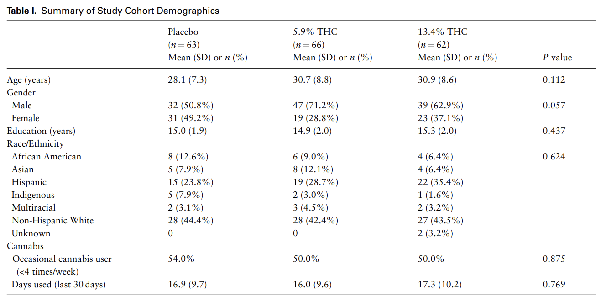
Source: Hoffman et al.
Participants were:
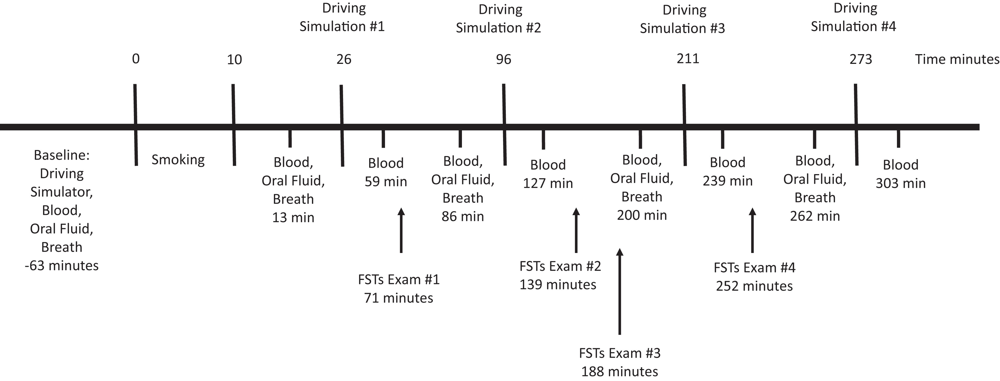
Source: Fitzgerald et al.
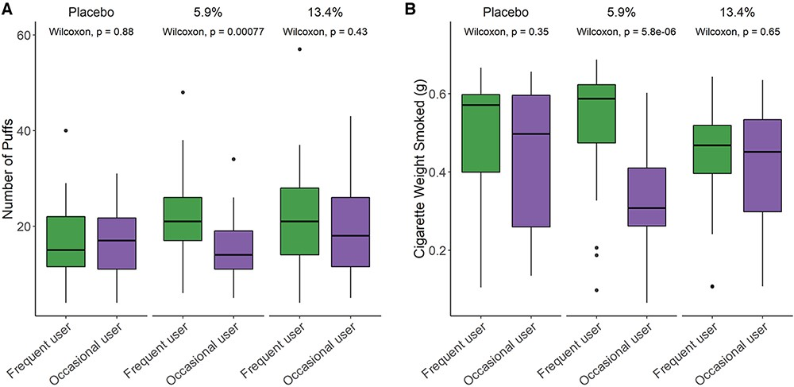
Source: Hoffman et al.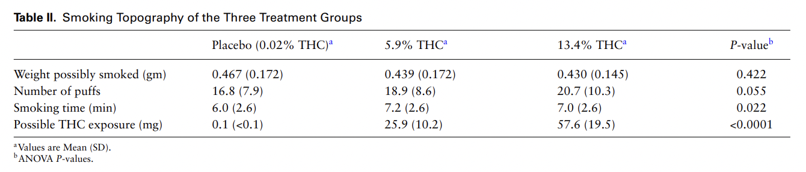
Source: Hoffman et al.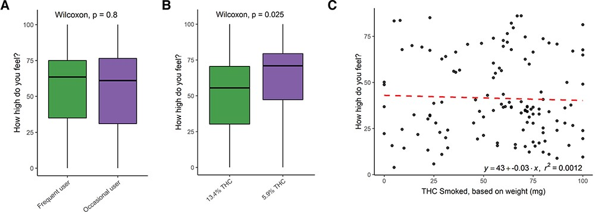
Source: Hoffman et al.
Three matrices:
❓ One study…so why 190, 192, and 191 participants?
ID | participant identifierTreatment | Placebo, 5.90%, 13.40%Group | frequent vs. occasional user…but labeled differently across files:
FLUID TYPE (WB) / Fluid (OF, BR) | which matrix the sample came fromTimepoint | collection code (T1 = before smoking)time.from.start | minutes from the start of smoking (negative = before)THC (pg/pad)): not directly comparable to the others!❓ What will we need to fix before we can combine these three files?
You’ll have access once your groups/repos are created…(today I want people to follow along; there will be time to try on your own soon!)
Important
These data are for our use only and not to be shared widely, so this case study cannot be put in your portfolio, but CS02 and your final project can!
In class (and in your own repo), glimpse() each data set to see example values too.
# A tibble: 14 × 3
column type n_missing
<chr> <chr> <int>
1 ID character 0
2 Treatment character 0
3 Group character 0
4 FLUID TYPE character 0
5 Timepoint character 0
6 CBN numeric 0
7 CBD numeric 0
8 THC numeric 0
9 11-OH-THC numeric 1
10 THC-COOH numeric 1
11 THC-COOH-Gluc numeric 1
12 CBG numeric 0
13 THC-V numeric 0
14 time.from.start numeric 2# A tibble: 13 × 3
column type n_missing
<chr> <chr> <int>
1 ID character 0
2 Treatment character 0
3 Group character 0
4 Fluid character 0
5 Timepoint character 0
6 CBN numeric 0
7 CBD numeric 0
8 THC numeric 0
9 11-OH-THC numeric 12
10 CBG numeric 0
11 THC-V numeric 0
12 THCA-A numeric 20
13 time.from.start numeric 0# A tibble: 7 × 3
column type n_missing
<chr> <chr> <int>
1 ID character 0
2 Treatment character 0
3 Group character 0
4 Fluid character 0
5 Timepoint character 0
6 THC (pg/pad) numeric 0
7 time.from.start numeric 0Where We’re Headed…
Results from: Hubbard et al (2021) Biomarkers of Recent Cannabis Use in Blood, Oral Fluid and Breath (Journal of Analytical Toxicology)
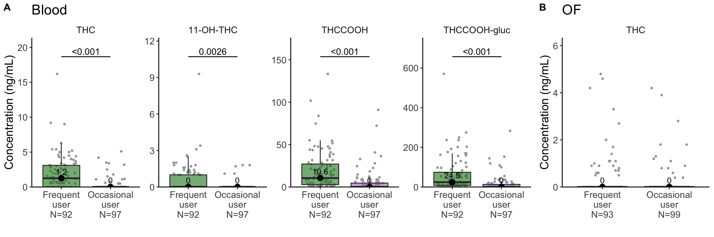
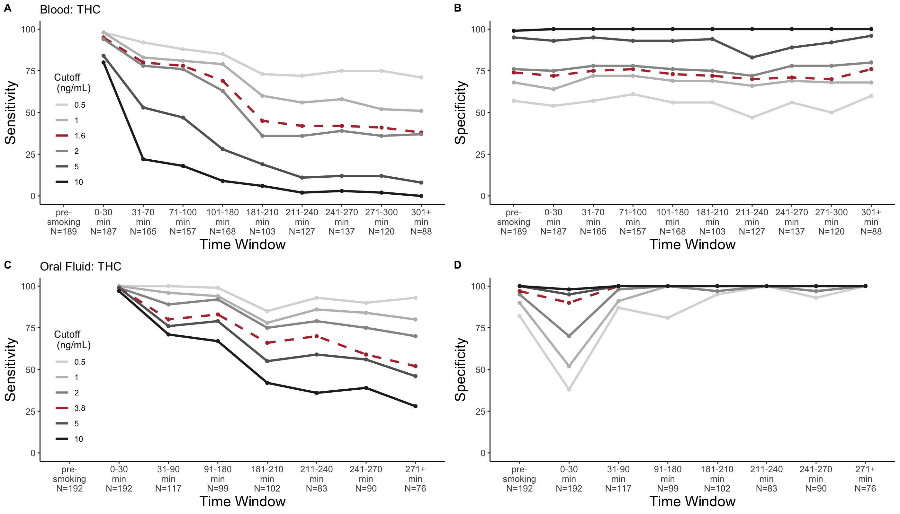
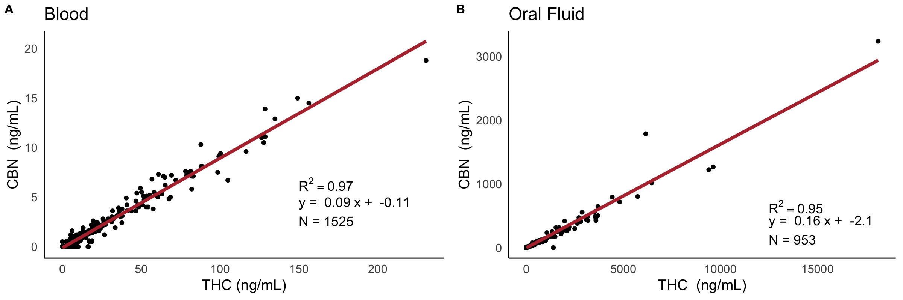
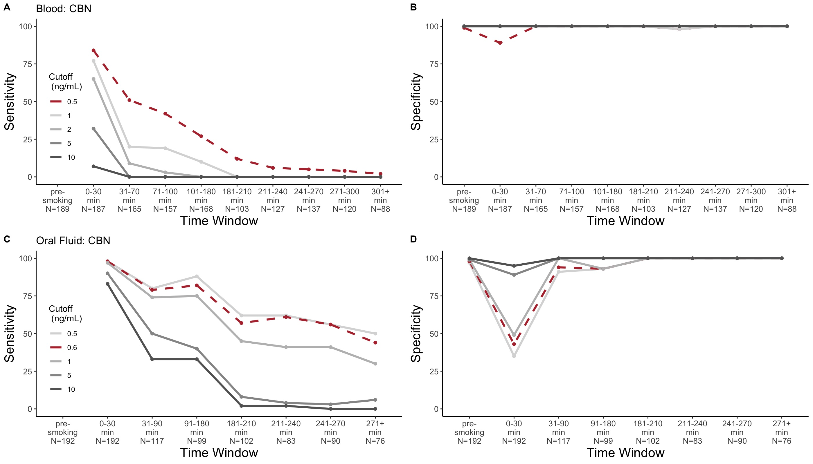
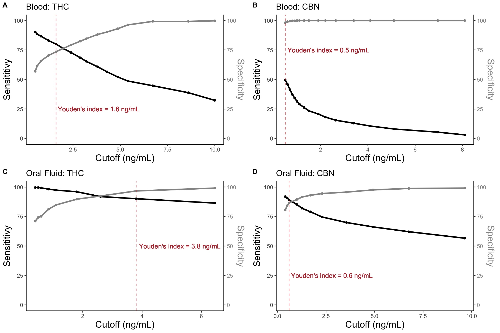
…and if there’s time PPV and Accuracy post 3h
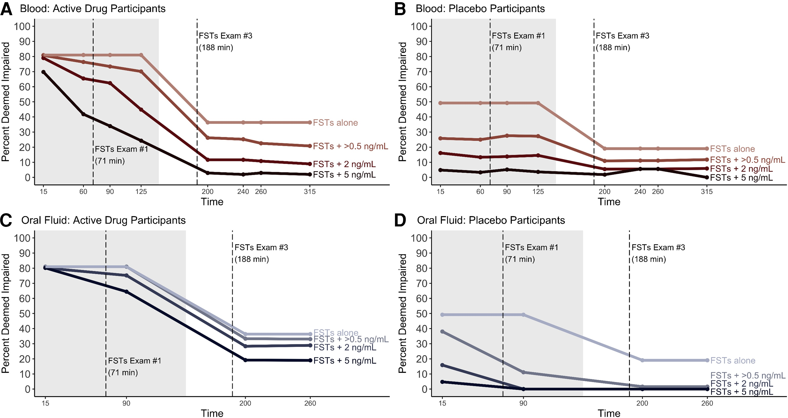
Source: Fitzgerald et al.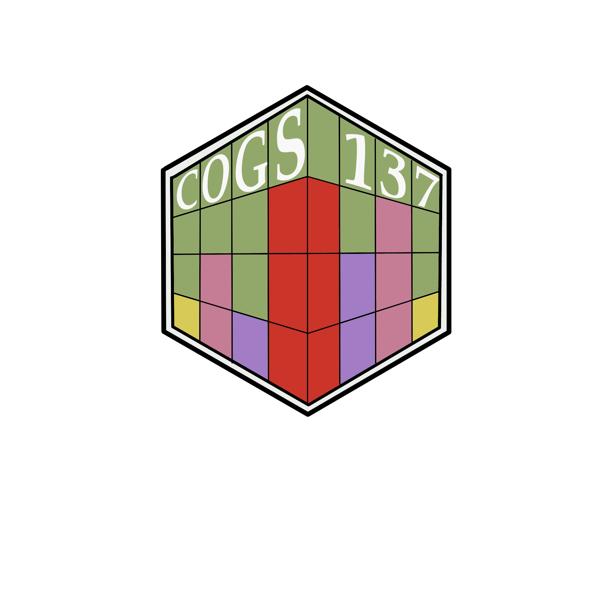